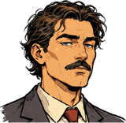

DOSSIER PERSONNEL · CONFIDENTIEL RH
Statistiques
Résumé
Parties 52
Collection 27/40
Succès 9/12
×
9 SUCCÈS SUR 12
Les succès obtenus sont pleins et cochés ; les autres sont en pointillé, avec leur condition.1er
Première concession
Gagner une partie.
✓ obtenu le 14/09
RN
Garde forestier
Gagner en Réserve naturelle.
✓ obtenu le 21/09
J9
Promotion éclair
Gagner avant le jour 10.
✓ obtenu le 30/10 · jour 9
J3
Portes ouvertes
Ouvrir son zoo au jour 3 ou avant.
✓ obtenu le 05/10
T0
Le terrain tel qu'il est
Gagner une course sans Terrassier ni Paysagiste.
Pas encore obtenu
4×
Spécialiste
4 espèces du même continent.
✓ obtenu le 28/09
4C
Tour du monde
4 continents dans un même zoo.
✓ obtenu le 12/10
+2
Heureux événement
2 petits chez un même animal.
✓ obtenu le 02/11
100
Actionnaire satisfait
100 de réputation dans un défi.
✓ obtenu le 12/11
10
Collectionneur
Installer 10 espèces différentes.
✓ obtenu le 08/10
40
Arche de ZooLife
Installer toutes les espèces.
espèces : 27/40
N6
Légende vivante
Un collaborateur au niveau 6.
niveau max atteint : 5/6

« Le plus proche : Légende vivante. Un collaborateur de niveau 5 attend sa promotion. Moi aussi, d'ailleurs. »